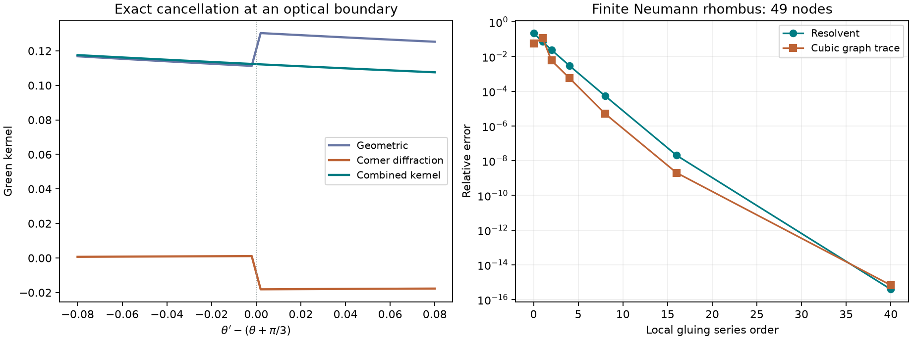

Keep the actual operator; make diffraction explicit
A convergent expansion
from mirrors and corners
The full Neumann rhombus resolvent can be constructed from explicit plane, half-plane, and wedge kernels by a convergent series. Cubing that kernel gives an exact network-integral trace identity. No global boundary inverse remains in this construction.
01 / No change of quantum problem
The full reflecting rhombus
Let \(\Omega=\operatorname{conv}\{(0,0),(1,0),(3/2,\sqrt3/2),(1/2,\sqrt3/2)\}\), and let \(h=-\Delta_N\) be its nonnegative Neumann Laplacian. For every constant \(\kappa>0\), write \(R_\kappa=(h+\kappa^2)^{-1}\), with kernel \(G_\kappa\). The spectral observable remains
The eigenvalues and triple products are those of the actual Neumann rhombus. The positive two-coordinate trace realization is unchanged. The auxiliary parameter \(\mu\) below is a larger constant resolvent parameter, not a spatial potential.
02 / The only genuine diffraction sites
An explicit kernel at an obtuse corner
The two acute corners have angle \(\pi/3\) and exact finite image formulas. The two obtuse corners have angle \(\alpha=2\pi/3\). For one such infinite Neumann wedge, use polar coordinates \(x=(r,\theta)\), \(y=(r',\theta')\), with \(0\leq\theta,\theta'\leq\alpha\). Put \(\beta=2\alpha=4\pi/3\), \(q=\pi/\alpha=3/2\), and define
For an angular difference \(\delta\), understood modulo \(\beta\), let
The first terms are actual geometric images. The integrals are exact corner diffraction, with angular weights that can have either sign. Optical-boundary values use the combined limiting prescription in the next section.
Derivation from angular modes
Separation of variables gives
One convenient derivation of the image/integral form starts with the heat kernel on the doubled cone. Insert the real-integral representation of \(I_\nu\), DLMF 10.32.4. Its cosine integral produces the image terms; its remaining integral is summed using the geometric series for \(\sum_{n\geq1}e^{-qns}\sin(nu)\). The resulting cone density is
At \(q=3/2\) this simplifies to \(D\). Laplace transformation of the heat kernel gives the displayed resolvent formula. Summing the two doubled-cone angular differences imposes Neumann conditions on the wedge. At \(q=3\), corresponding to the acute corners, the two fractions cancel identically and only images remain.
03 / A cancellation that the exact formula must preserve
Specular and diffractive pieces are not globally independent weights
At an optical boundary \(\delta+k\beta=\pm\pi\), an image enters or exits the geometric sum. Its jump is \(g_\kappa(r+r')\). The diffraction integral has the opposite jump. For example, when \(\theta'\) crosses \(\theta+\pi/3\),
Exactly at the boundary, count the tangent image with weight \(1/2\) and use the average of the two one-sided diffraction limits. In the corresponding angular density this is \(D=0\) for that shadow component away from \(s=0\). The combined kernel is continuous and agrees with its angular-mode definition.
Derivatives in the global construction below are derivatives of the complete wedge kernel. Separating its image and diffraction derivatives first requires their canceling optical-boundary distributions. Ignoring those distributions would give an incorrect expansion.

04 / Eliminate the global boundary inverse
A series built entirely from known local kernels
Cover the rhombus by corner, side, and interior patches. Choose real smooth cutoffs \(\chi_j\), supported in their patches, with \(\sum_j\chi_j^2=1\) and zero normal derivative on each physical boundary side. Let \(R_{j,\mu}\) be the explicit resolvent of the matching infinite wedge, half-plane, or plane. Multiplication by \(\chi_j\) includes extension by zero into the model and restriction back to the rhombus.
These are explicit kernel operators. They contain no global rhombus resolvent or boundary inverse. Put
For \(q_\mu<1\),
The series converges in operator norm and in \(L^3(\Omega^2)\) for its kernels. After the first, logarithmically singular term, the kernel corrections converge absolutely and uniformly. For every target \(0<\kappa<\mu\),
The second series converges in operator norm and in kernel \(L^3\), with geometric ratio \(1-\kappa^2/\mu^2\). Evaluate the local gluing series before the mass-shift series; unconditional convergence of all possible joint regroupings is not asserted.
A fully specified nine-patch choice and coarse constants
Let \(b(s)=e^{-1/(1-s)}\) for \(s<1\), and \(b(s)=0\) otherwise. For each corner \(v\), take raw cutoff \(b(|x-v|^2/(9/20)^2)\). On each unit side use arclength \(s_e\) from its first endpoint and inward distance \(d_e\), with raw cutoff \(b((s_e-1/2)^2/(1/5)^2)b(d_e^2/(1/10)^2)\). For the interior take \(\prod_e a(d_e/(3/100))\), where \(a(s)=e^{-1/(s-1)^2}\) for \(s>1\), zero otherwise. Normalize these nine raw cutoffs by the square root of the sum of their squares.
The supports meet only their matching physical boundary sides. Radial corner cutoffs and even side cutoffs have zero normal derivative; the interior cutoff vanishes near the boundary. The normalizer is at least \(e^{-4}\): if all wall distances exceed \(3/50\), use the interior cutoff; otherwise the nearest-side foot lies either in its central interval \([7/20,13/20]\), where the side cutoff suffices, or within distance \(7/20\) of a corner, where the corner cutoff suffices.
Elementary differentiation gives \(|b'|\leq1\), \(|b''|\leq8\), \(|a'|\leq1\), \(|a''|\leq9\). The Euclidean norms of the nine raw gradients have squared sum below \(22000\); the raw Laplacians have squared sum below \(55000^2\). Differentiating the vector normalization and using \(e^4<55\) gives the deliberately coarse bounds
Thus \(\mu=\kappa+10^6\) certainly gives \(q_\mu<1\). This very conservative choice establishes a fully specified construction, not an efficient numerical parameter. Tighter bounds or better patches can reduce it substantially. The finite-model test below uses its directly checked matrix norm instead.
05 / Why this is an identity rather than a formal expansion
Contraction and kernel convergence
Proof of the global theorem
The partition and the matching local differential equations give \((h+\mu^2)Q_\mu=I+E_\mu\), with the actual Neumann boundary condition. For every local model, \(\|R_{j,\mu}\|_{2\to2}\leq\mu^{-2}\) and \(\|\nabla R_{j,\mu}\|_{2\to2}\leq(2\mu)^{-1}\). Hence \(\|E_\mu\|_{2\to2}\leq\mathfrak d/\mu^2+\mathfrak g/\mu\leq q_\mu<1\). The operator series follows by the geometric-series identity and coercive uniqueness.
For kernel convergence let \(p_j(t;x,y)\) be a local heat kernel. These convex Neumann models have mass one. If \(I(t)=\int p_j|\nabla\log p_j|^2\), the Bochner identity and the flat convex boundary give \(I'(t)\leq-I(t)^2\), so \(I(t)\leq1/t\). Excising the wedge vertex and passing to the limit is valid: the first nonconstant angular exponent is at least \(3/2\), and the extra small-circle terms vanish. Cauchy–Schwarz and Laplace transformation yield
It follows that \(\sup_y\int_\Omega|E_\mu(x,y)|\,dx\leq q_\mu\). Also \(p_j(t;x,y)\leq C_0/t\), with \(C_0=3/(2\pi)\): the acute wedge has six images; bisecting the obtuse wedge and comparing its Neumann and mixed half-wedge kernels bounds it by the acute-wedge kernel. Plane and half-plane bounds are smaller.
These estimates give uniformly bounded \(L^3\) rows of \(Q_\mu\) and \(L^{3/2}\) columns of \(E_\mu\). For \(J\) patches one explicit bound is
For example, the gradient-column bound follows from the Fisher estimate and the heat-kernel maximum, which give \(\|\nabla p_j(t;\cdot,y)\|_{3/2}\leq C_0^{1/3}t^{-5/6}\); all required time integrals are finite gamma integrals. Hölder's inequality supplies the displayed bound. Right composition with \(E_\mu\) then gives
The first kernel has integrable logarithmic singularities, so the full series converges absolutely in kernel \(L^3\). Finally \(\|( \mu^2-\kappa^2)\mathscr R_\mu\|_{2\to2}=1-\kappa^2/\mu^2<1\), proving the mass shift. Kernels of powers of \(\mathscr R_\mu\) of order at least two are uniformly bounded; inserting one bounded operator power between two uniformly \(L^2\) kernel rows gives a geometric uniform bound on the mass-shift tail. This proves its kernel \(L^3\) convergence as well.
06 / The resulting exact network-integral trace
Three chains joined at their two common vertices
Define \(\mathcal K_{n,\mu}(x,y)=(Q_\mu E_\mu^n)(x,y)\), where \(n=0\) means \(Q_\mu\). Then
This triple series is absolutely convergent. Each chain is a finite sum of integrals of explicit local mirror/corner kernels and cutoff derivatives. For arbitrary positive \(\kappa\), use
The outer kernel series is nonnegative and convergent; the inner definition of \(\mathscr R_\mu\) is the preceding convergent local series. Powers mean ordinary kernel composition. Thus the construction uses only explicitly known local kernels, integrations, and specified sums, while the left side uses the actual rhombus spectral data.
Absolute convergence of the first trace formula follows from \(\sum_n\|\mathcal K_{n,\mu}\|_{L^3}<\infty\) and Hölder's inequality. Kernel \(L^3\) convergence justifies the second cube and its limit. The cutoffs affect individual chain weights but the total is independent of them by uniqueness of the Neumann resolvent.
An explicit trace truncation bound
Put \(A=|\Omega|\), \(S_N=\sum_{n=0}^N(-1)^n\mathcal K_{n,\mu}\), and \(M_3=\|Q_\mu\|_{L^3(\Omega^2)}+A^{2/3}B_\mu/(1-q_\mu)\). Both \(\|S_N\|_3\) and \(\|G_\mu\|_3\) are bounded by \(M_3\). The kernel tail estimate and the difference of two cubes give
Thus the continuum series has a proved geometric tail bound. Numerical quadrature of its individual integrals would need its own error control.
07 / What this does and does not say about the continua
Exact chain weights and intrinsic family weights are different stages
The free junction integrations are still \(x\) and \(y\). Away from optical boundaries, stationary phase of the geometric pieces imposes the two equal-weight \(120^\circ\) junction balances. The additional patch integration points impose straight continuation; they are auxiliary interfaces, not new physical net nodes. The corner integrals supply actual diffraction at the two obtuse vertices.
For a compact nondegenerate part of the displayed family, the leading clean weight is still the proved area density
The exact network series retains the full kernel integrals, including directions transverse to the family, cutoff interfaces, and the continuous diffraction variables. It has not been regrouped bijectively into maximal physical geodesic-net families with closed scalar weights. Such a regrouping must preserve the optical-boundary cancellation shown above; separate globally positive family and corner weights would not do so.
This construction therefore removes the global boundary inverse and proves an exact convergent local-kernel formula. The remaining gap is the intrinsic family organization, rather than an unspecified operator correction or an unproved formal geometric series.
08 / Evidence and literature
Independent corner checks and a finite-model convergence check
The continuum wedge image-plus-diffraction formula was checked against the independent angular \(I_\nu K_\nu\) series, including both sides of an optical boundary and its half-weight value. The six displayed tests agree within \(3.4\times10^{-16}\) in absolute floating-point discrepancy. The plotted angular profile is included in the data. These are numerical checks of the derived identity, not interval certificates.
A separate finite-element test uses the actual rhombus, with \(49\) nodes, nine overlapping local subdomain resolvents, and the same series algebra. At auxiliary mass \(10\), the directly computed residual matrix norm is \(0.4112852\); order \(40\) agrees with the direct global resolvent and cubic graph trace to roundoff. The positive mass-shift series then reaches target \(\kappa=1.5\). This validates finite-dimensional assembly and convergence; it is not an implementation or continuum error certificate for the infinite-wedge patch construction.
Hannay and Thain, Exact scattering theory for any straight reflectors in two dimensions, give a multiple-corner ray construction. Appendix C establishes convergence in the slit example and describes general convergence as encouragement rather than a proof. That does not supply the rhombus trace interchange needed here. The local-kernel contraction and ordered continuation above give a different, explicitly controlled construction.
All checks and optical-boundary data · Reproducible calculation · Export the figure

python3 -m pip install -r research-requirements.txt python3 scripts/rhombus_corner_expansion.py